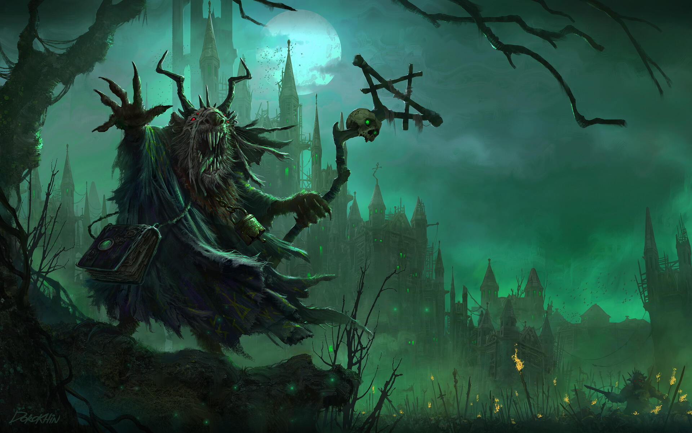

Mark's bigest hobbie
Mark is a passionate fan of the Warhammer Fantasy universe and his favorite faction within the game is the Skaven. These cunning and ruthless creatures are known for their sneaky tactics and their ability to spread disease and destruction wherever they go. Mark enjoys playing as the Skaven because of their unique gameplay mechanics and their ability to surprise his opponents with unexpected attacks. He spends countless hours building and painting his Skaven army, perfecting his strategy and tactics for when he faces off against other players. For Mark, there's nothing quite like the thrill of commanding a swarm of Skaven to victory on the battlefield.
A skaven warlord
Marks favorite figures
- Lord Skrolk - A powerful sorcerer who wields the Plague of Pestilence, a deadly spell that spreads disease and decay.
- Queek Headtaker - A fearsome warrior who leads the clan Mors and is known for his viciousness in battle.
- Ikit Claw - A brilliant inventor and engineer who uses his technological genius to create devastating weapons and war machines
- Tretch Craventail - A cunning and treacherous warlord who is skilled at maneuvering his armies to strike from unexpected angles.
- Thanquol - A devious Skaven Grey Seer who is known for his intelligence and cunning, but is also prone to catastrophic failures.
Mark also likes those factions.
- High Elves - A proud and ancient race of elf-like beings with a rich culture and powerful magic.
- Warriors of Chaos - A horde of savage warriors who worship the dark gods of Chaos and seek to spread destruction and corruption.
- Empire - A human faction that represents the strength of civilization and the power of technology.
- Vampire Counts - A faction of undead creatures led by powerful vampire lords, who use their dark magic to control and manipulate their armies.